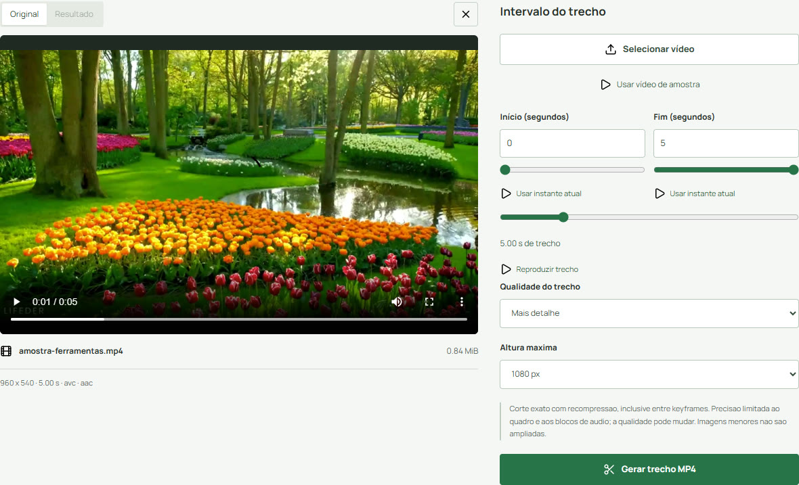

Formato & corte
Como cortar um vídeo no celular
Defina um intervalo sem confundir corte de duração com recorte da imagem.
Aqui o corte é de tempo
Cortar vídeo conserva um trecho entre Início e Fim. Não remove bordas, não muda o enquadramento e não oculta um rosto dentro da cena. Se você precisa apagar uma informação que aparece na imagem, esta ferramenta não realiza essa edição.
Os campos usam segundos. Um início de 1,23 e fim de 4,56 pede um trecho de aproximadamente 3,33 segundos. O mínimo é 0,2 segundo, o fim precisa vir depois do início e nenhum ponto pode ultrapassar a duração original.
Marque e experimente o trecho
- Abra Cortar vídeo e use Selecionar vídeo ou Usar vídeo de amostra.
- Ajuste Início e Fim pelos campos em segundos ou pelos controles deslizantes. Também é possível pausar o Original e usar Usar instante atual.
- Confira a duração e clique em Reproduzir trecho: a prévia para no fim escolhido. Defina Qualidade do trecho e Altura máxima antes de Gerar trecho MP4.
- Reproduza o Resultado, confira os primeiros e últimos quadros e o som. Só então use Baixar cópia.
{kind=link}

Precisão e qualidade da cópia
O corte recodifica o vídeo para não depender apenas dos pontos em que o original guardou um quadro completo. Ainda assim, o instante disponível é limitado pelos quadros e pelos blocos de áudio. Não trate um número decimal como uma garantia de precisão infinita.
Nos testes locais, o intervalo de 1,23 a 4,56 s gerou 3,33 s, com imagem inicial comparada à origem e sincronismo conferido. Um corte curto de 0,3 s em entrada sem som também passou. Isso não certifica todos os arquivos nem uma qualidade visual idêntica.
O que ainda depende do aparelho
Os controles foram testados em larguras de tela mobile emuladas no Chrome/Windows. Decodificadores, memória e desempenho do celular real ainda precisam de verificação. Mantenha a página aberta enquanto trabalha e use Cancelar se quiser interromper.
Para corrigir os pontos, volte à prévia Original. Na prévia Resultado, os controles de usar o instante ficam desabilitados para evitar confundir o tempo do trecho com o tempo da gravação inteira. Preserve sempre o original e faça um teste curto antes de uma edição importante.
Escopo da verificação
Procedimentos conferidos nos controles atuais e testes locais do Chrome/Windows. Viewports mobile são emulados; aparelhos físicos e outros navegadores não estão homologados. Exemplos e capturas são do projeto, com amostras sintéticas ou autorizadas, sem dados de visitantes.
Fontes técnicas
Referências da implementação. Resultados numéricos e limites do portal vêm dos testes locais, não de uma garantia das fontes.